<div class="textcontainer">
<p class="margin"></p>
<h3>Final Project: Study Buddy!</h3>
Video! <br>
<video controls style="width: 200%; flex-shrink: 0; max-width: 400px;">
<source src="./fullsloth.mp4" type="video/mp4">
Your browser does not support the video tag. <a href="./fullsloth.mp4">Download the video</a> instead.
</video>
<br>
For my final project, I made a car in the shape of a sloth. Its head opens
up in the front, revealing a slit where you can put your phone. Then, you
move the top pieces on the car, which are little magnetic sloths. One sloth
allows you to set a timer- 5, 10 or 20 minutes (but for demo purposes I
switched this to seconds), and the other sloth starts the car. When you move the
front sloth to start, the car reverses and turns around your computer. Then, it
parks there and waits for the lenght of the timer. Then, it comes back to exactly
where it started (shoutout stepper motors!). I was motivated by the cuteness of
sloths to do this project, and also I wanted to make a car and do a project
that was light on coding (because that's what my degree is in) and had much
more emphasis on the tools that I didn't know anything about going into this class
like Fusion, laser cutters, 3D printers and teaching myself how to wire new
circuit components.
<br><br>
Download all the CAD and arduino files here!<br>
<a href="./final_project_code.ino" download>Download final_project_code</a> <br>
<a href="./cad.zip" download>Download my CAD files and the gcode for the cute sloth piece on top</a>
<br><br>
It is composed of the following parts:
<ul>
<li>The wheels/base</li>
This is what the base looks like inside the car. It is fully deconstructable!<br>
<p>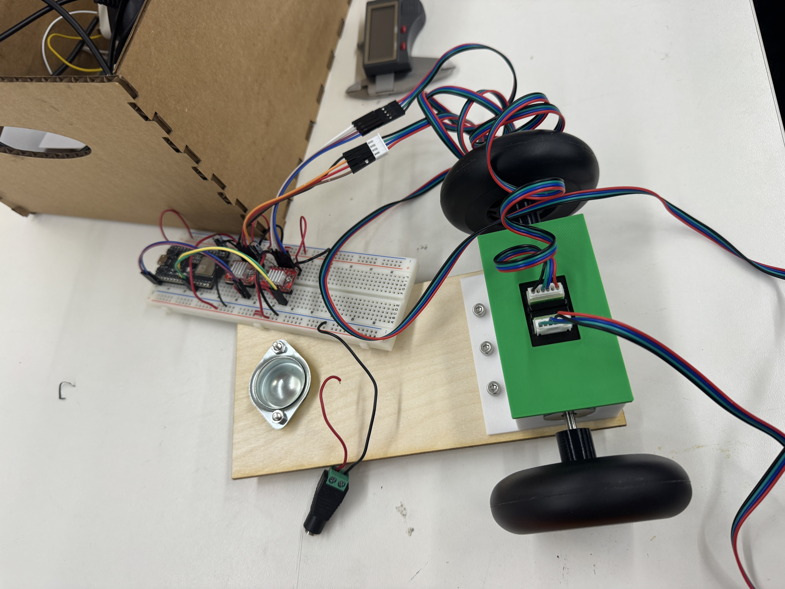</p> <br>
These are 3D printed pieces that press fit into the wheels to keep them turning.<br>
<p>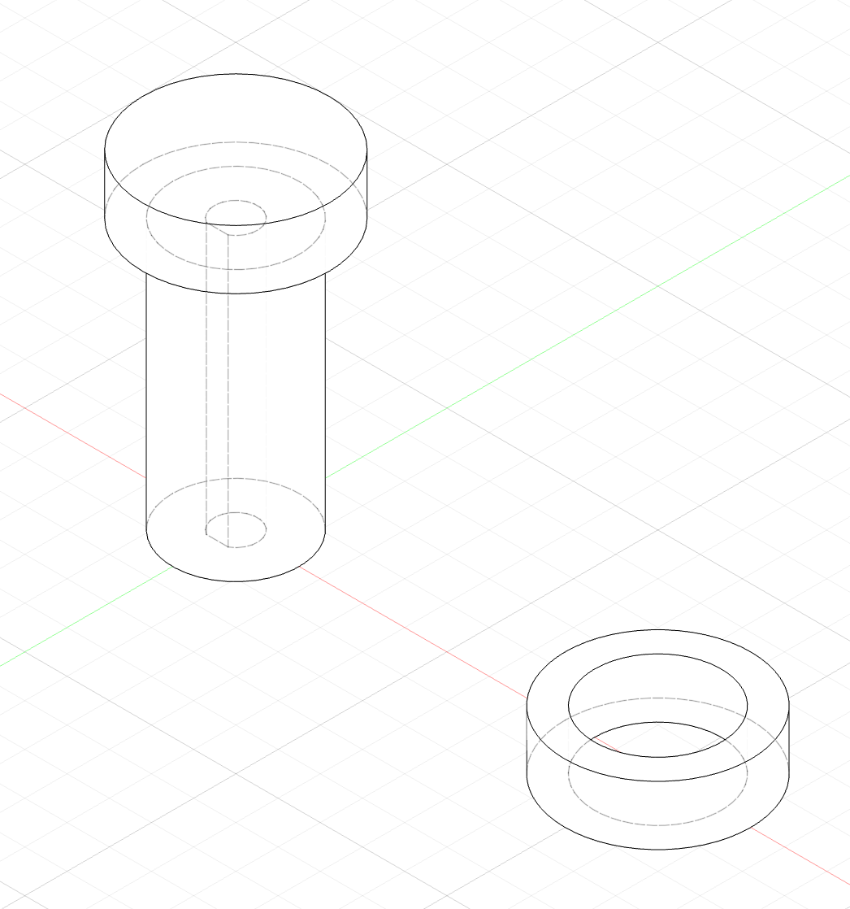</p> <br>
And this is the actual base.<br>
<p>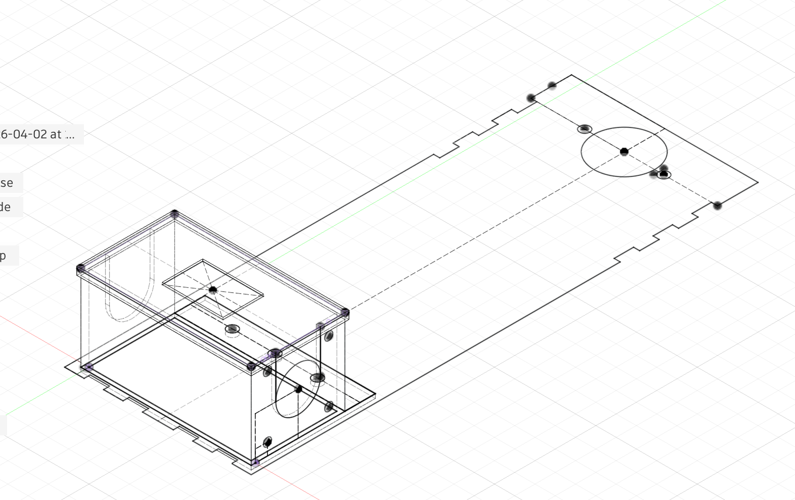</p> <br>
<li>Then I did the bredboard to make sure it would move</li>
<p>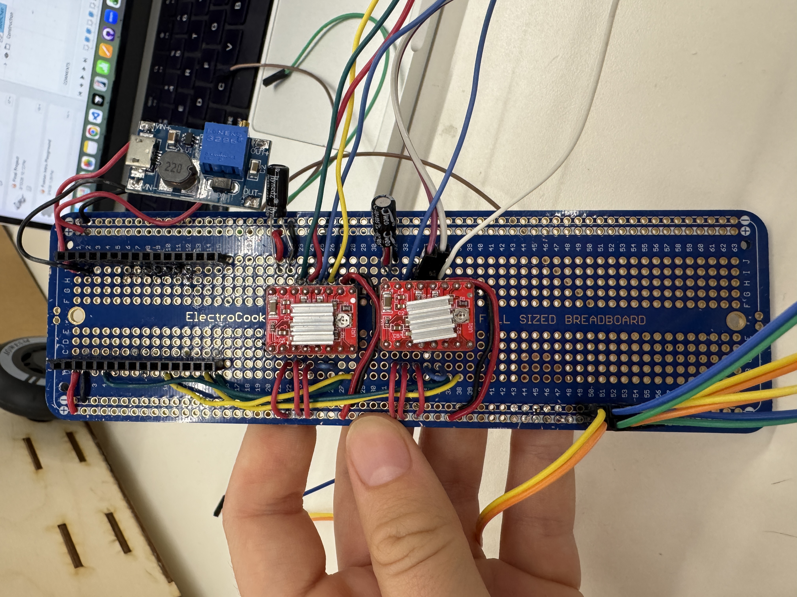</p> <br>
<li>Then I did the rest of the body and drilled holes in the sloth pieces and in
the top to make space for the magnets on the sides and the hall sensor in the middle
(and 3 magnets in the sloth pieces).
</li>
<p>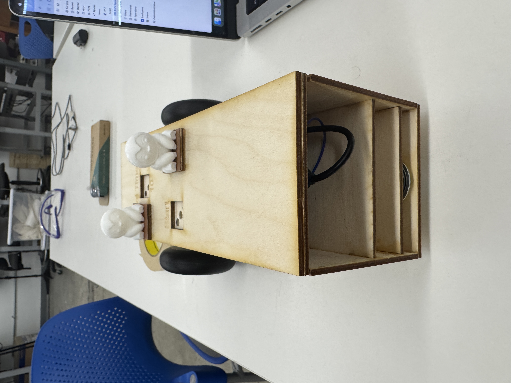</p> <br>
Also I made 2 extra sloth friends because look how cute! <br>
<p>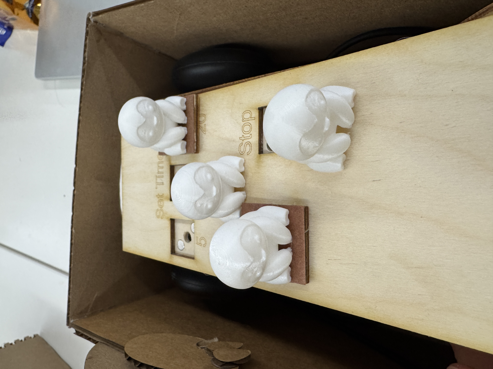</p> <br>
<li>Then I put all the circuits with a battery inside the car and attached the front.</li>
<p>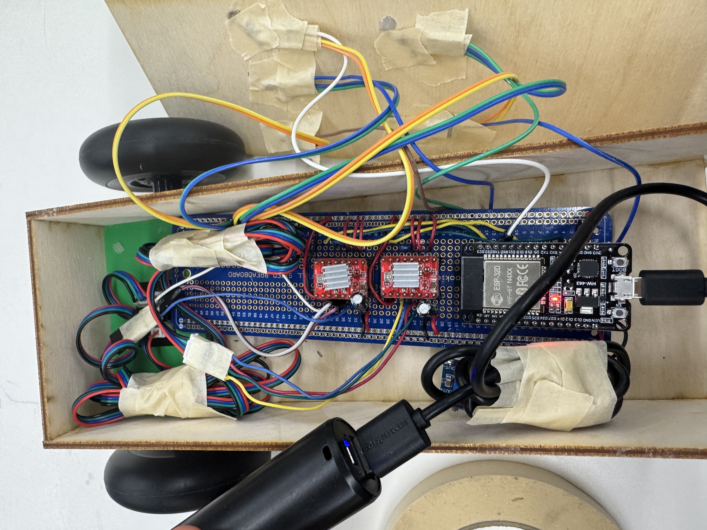</p> <br>
</ul>
Here is the final CAD that has all of those parts.
<p>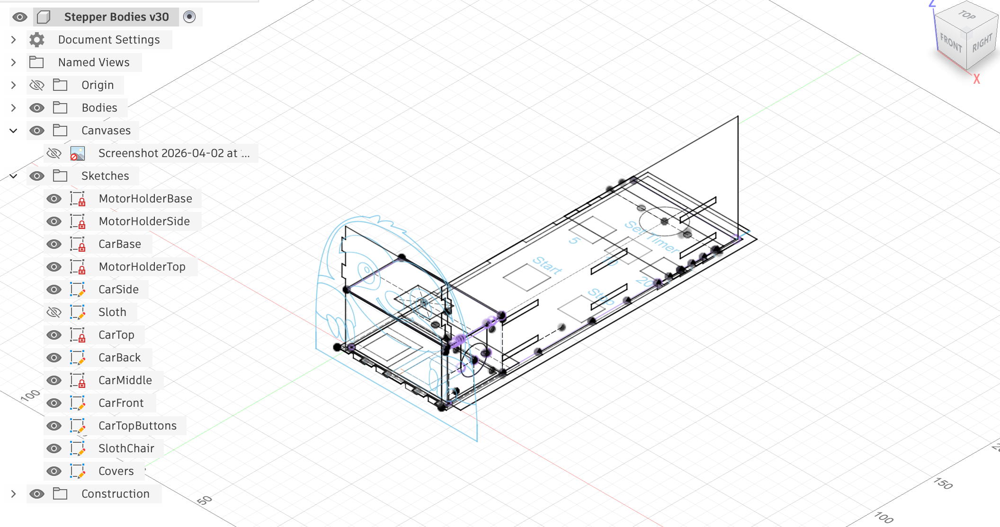</p> <br>
And here is the back of the sloth (it's got another sloth!). And also pictures from all the sides.<br>
<p>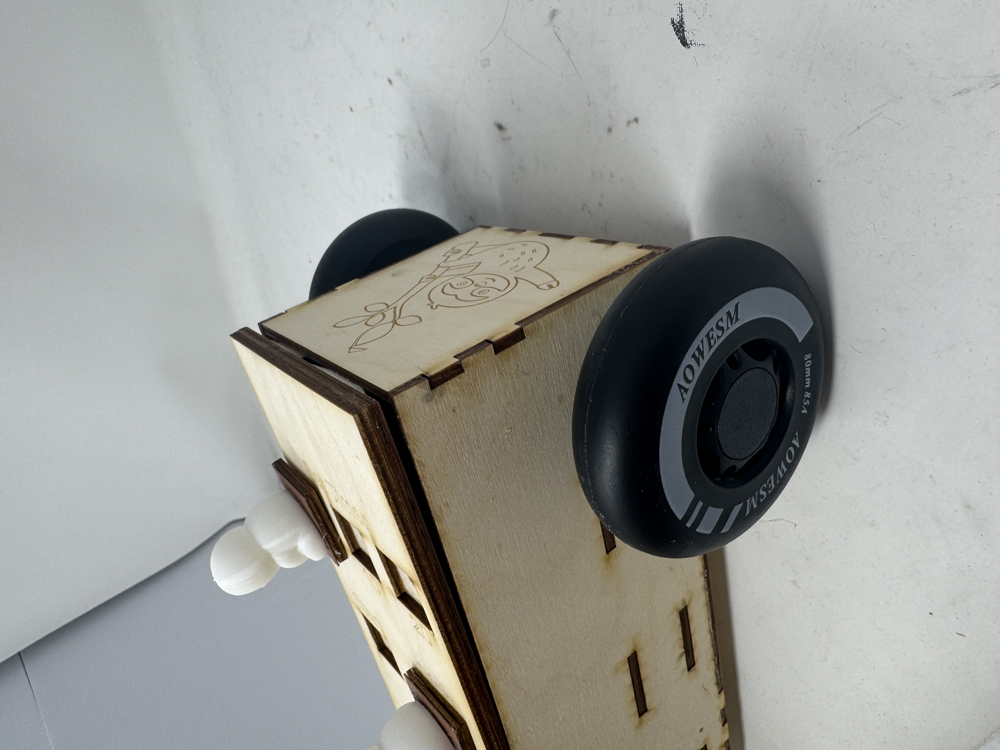</p> <br>
<p>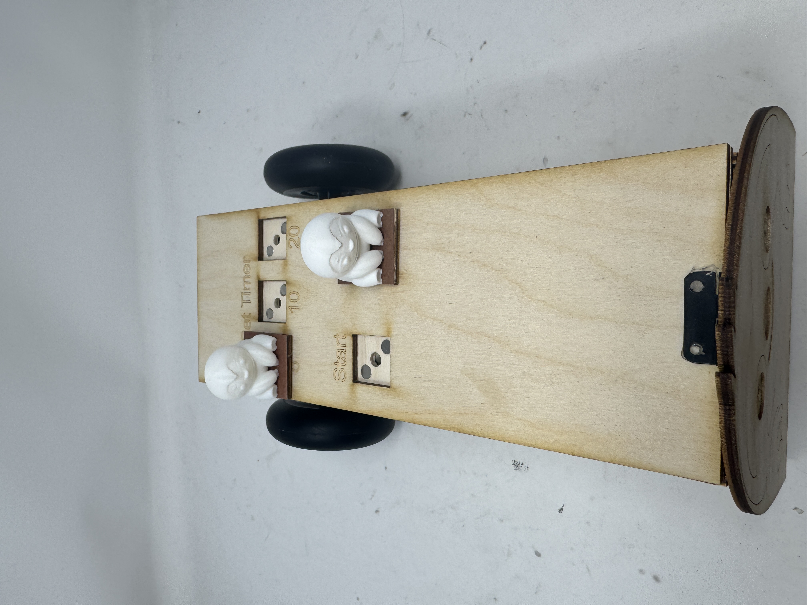</p> <br>
<p>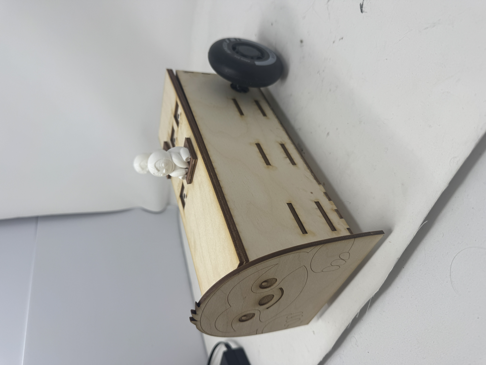</p> <br>
<p>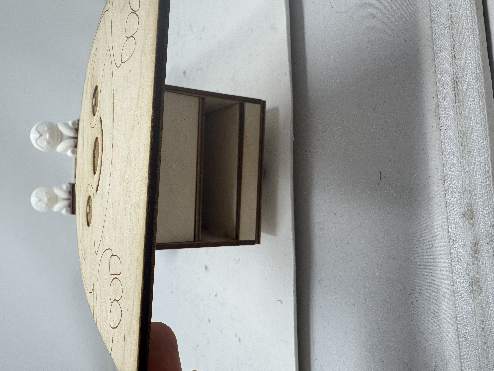</p> <br>
<br><br>
The hardest part of this project was definitely the electric wiring for the stepper
motors. I had never soldered a bredboard before (pre machine week!) and know about the
pins that you solder in instead of the actual microcontroller and stepper motor drivers.
Now I do! Boy are they helpful lol. I also didn't know that if the stepper motor drivers
don't work, it's often not your fault, it's just that you need to get another stepper
motor driver. This took a lot of time to learn through debugging (i.e. why won't the wheel
switch directions? Oh! That pin just doesn't work) but I learned SO much while doing it.
And, (great news!) because I got so much better at random circuit debugging and de-soldering
(I had to desolder probably like 70% of my original bredboard, yay flux), at the end of
my project, when I was wiring the 5 Hall sensors for the magnetic detection on the top
for the start/stop/timers, it was smooth sailing. Same with adding the boost converter
to make the 12V power supply in the car. After testing all 5 sensors indiviudually
in another circuit (I learned you always need to check if your parts work before putting
them in a more complicated thing), one of my Hall sensors just didn't work
after I had soldered the bredboard (Uh Oh...). But! I tested out all the different wires
that could be broken and figured out that one of the pins on my microcontroller just
didn't work mysteriously, so I switched the pins which fixed the issue. Yay circuits!
<br><br>
The other challenging part of my project was figuring out how to keep the stepper motors
in the car in a way that I could get them in/out flexibly and attaching them successfully
to the wheels. It took a lot of iterations of 3D prints to get the fits jsut right, but it
was super satisfying once it worked.
<br><br>
The coolest thing that I noticed by the end of working on my project was how easy fusion
got. Designing 3D and 2D parts for the 3D printer and laser cutter became easier for
me than it was earlier in the semester. Woot woot, I learned! I also really enjoyed making
cute little sloth designs, it brought me joy.
<br><br>
The easiest part of my project was the code, but, here it is!
It's just one file that uses enums to control car state and movement state.
<button class="btn btn-secondary" type="button" data-bs-toggle="collapse" data-bs-target="#finalProjectCodeCollapse" aria-expanded="false" aria-controls="finalProjectCodeCollapse">
Show / hide code
</button>
<div class="collapse mt-3" id="finalProjectCodeCollapse">
<pre><code>#include &lt;AccelStepper.h&gt;
// NOTE: stepper1 uses negative moves to reverse
// ---------- Motor pins ----------
// left wheel
const int stepPin1 = 2;
const int dirPin1 = 19;
// right wheel
const int stepPin2 = 23;
const int dirPin2 = 22;
// ---------- Hall sensor pins ----------
const int hallPins[5] = {25, 33, 21, 35, 34};
const int stopPin = hallPins[0];
const int startPin = hallPins[1];
const int fiveSecPin = hallPins[2];
const int tenSecPin = hallPins[3];
const int twentySecPin = hallPins[4];
// ---------- Adjustable variables ----------
const int motorSpeed = 800;
const int motorAcceleration = 500;
const int numReadings = 500;
// Movement step sizes
const long move1 = 500;
const long move2 = 3000;
const long move3 = 4000;
// Default timer value
unsigned long selectedWaitTime = 5000;
// ---------- Motors ----------
AccelStepper stepper1(AccelStepper::DRIVER, stepPin1, dirPin1);
AccelStepper stepper2(AccelStepper::DRIVER, stepPin2, dirPin2);
// ---------- State machine ----------
enum CarState {
IDLE,
REVERSING,
WAITING,
RETURNING
};
enum MovementState {
MOVE_1,
MOVE_2,
MOVE_3,
DONE
};
CarState state = IDLE;
MovementState movementState = DONE;
unsigned long waitStartTime = 0;
// Prevents retriggering while the same magnet placement is still active
bool startArmed = true;
// ---------- Non-blocking hall sensor averaging ----------
int hallStates[5] = {LOW, LOW, LOW, LOW, LOW};
int hallSums[5] = {0, 0, 0, 0, 0};
int hallSampleCount = 0;
void setup() {
Serial.begin(9600);
delay(1000);
Serial.println("beginning");
// Set up hall sensor pins
for (int i = 0; i &lt; 5; i++) {
if (hallPins[i] == 34 || hallPins[i] == 35) {
pinMode(hallPins[i], INPUT); // ESP32 pins 34/35 do not support internal pullups
} else {
pinMode(hallPins[i], INPUT_PULLUP);
}
}
// Set up motor speeds and accelerations
stepper1.setMaxSpeed(motorSpeed);
stepper1.setAcceleration(motorAcceleration);
stepper2.setMaxSpeed(motorSpeed);
stepper2.setAcceleration(motorAcceleration);
}
void loop() {
// Keep motors moving smoothly
stepper1.run();
stepper2.run();
// Update hall sensors
updateHallSensorsNonBlocking();
// Update selected wait time
readTimerPins();
int stopReading = hallStates[0];
int startReading = hallStates[1];
// Stop mode overrides everything
if (stopReading == HIGH) {
stopMotorsNow();
state = IDLE;
movementState = DONE;
startArmed = false;
return;
}
// Only re-arm when idle AND the start magnet has been removed
if (state == IDLE &amp;&amp; startReading == LOW) {
startArmed = true;
}
// Start only once per magnet placement
if (state == IDLE &amp;&amp; startReading == HIGH &amp;&amp; startArmed) {
startArmed = false;
startReverse();
}
updateMotionState();
}
void updateHallSensorsNonBlocking() {
for (int i = 0; i &lt; 5; i++) {
hallSums[i] += digitalRead(hallPins[i]);
}
hallSampleCount++;
if (hallSampleCount &gt;= numReadings) {
for (int i = 0; i &lt; 5; i++) {
if (hallSums[i] &gt;= (numReadings / 2 + 1)) {
hallStates[i] = HIGH;
} else {
hallStates[i] = LOW;
}
hallSums[i] = 0;
}
hallSampleCount = 0;
}
}
void readTimerPins() {
if (hallStates[2] == HIGH) {
selectedWaitTime = 5000;
}
if (hallStates[3] == HIGH) {
selectedWaitTime = 10000;
}
if (hallStates[4] == HIGH) {
selectedWaitTime = 20000;
}
}
void startReverse() {
Serial.println("Starting reverse");
movementState = MOVE_1;
state = REVERSING;
// Reverse move 1: both motors
stepper1.move(-move1);
stepper2.move(move1);
}
void startReturnSequence() {
Serial.println("Starting return sequence");
movementState = MOVE_1;
state = RETURNING;
// Return move 1: exact opposite of reverse move 3
stepper1.move(move3);
stepper2.move(-move3);
}
void updateMotionState() {
if (state == REVERSING) {
updateReverseSequence();
}
else if (state == WAITING) {
if (millis() - waitStartTime &gt;= selectedWaitTime) {
startReturnSequence();
}
}
else if (state == RETURNING) {
updateReturnSequence();
}
}
void updateReverseSequence() {
if (movementState == MOVE_1) {
if (bothMotorsDone()) {
Serial.println("Reverse move 1 complete");
// Reverse move 2: only motor 1
stepper1.move(-move2);
movementState = MOVE_2;
}
}
else if (movementState == MOVE_2) {
if (stepper1.distanceToGo() == 0) {
Serial.println("Reverse move 2 complete");
// Reverse move 3: both motors
stepper1.move(-move3);
stepper2.move(move3);
movementState = MOVE_3;
}
}
else if (movementState == MOVE_3) {
if (bothMotorsDone()) {
Serial.println("Finished reversing, waiting");
movementState = DONE;
waitStartTime = millis();
state = WAITING;
}
}
}
void updateReturnSequence() {
if (movementState == MOVE_1) {
if (bothMotorsDone()) {
Serial.println("Return move 1 complete");
// Return move 2: exact opposite of reverse move 2
stepper1.move(move2);
movementState = MOVE_2;
}
}
else if (movementState == MOVE_2) {
if (stepper1.distanceToGo() == 0) {
Serial.println("Return move 2 complete");
// Return move 3: exact opposite of reverse move 1
stepper1.move(move1);
stepper2.move(-move1);
movementState = MOVE_3;
}
}
else if (movementState == MOVE_3) {
if (bothMotorsDone()) {
Serial.println("Returned to start");
movementState = DONE;
state = IDLE;
startArmed = false;
}
}
}
bool bothMotorsDone() {
return stepper1.distanceToGo() == 0 &amp;&amp; stepper2.distanceToGo() == 0;
}
void stopMotorsNow() {
stepper1.setCurrentPosition(stepper1.currentPosition());
stepper2.setCurrentPosition(stepper2.currentPosition());
}
</code></pre>
</div>
</div>